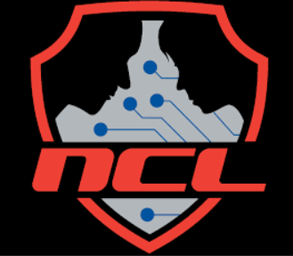

Internships
Approved my understanding of the differences between entrepreneurship vs intrapreneurship and how to compile information through communication and the development of marketing tools to promote a specific model or product
Moderated a collection of posts, emails, and pictures for evidence of advising teachers and inviting students from my high school to participate in Inspirit AI’s (Artificial Intelligence) Scholars program that I got the chance to participate in during the summer of my high school freshman year
Implemented skills such as content and email marketing using Gmail & Canva to better encourage students to sign up for this prestigious opportunity in order to work with mentors from elite institutions such as Stanford, Harvard, MIT, and etc
Competitions

Developed hands-on practice of various cybersecurity topics through completing Capture the Flag (CTF) challenges in a matter of 3 days per game
Approved my understanding of specific tools (Cyber Chef, Wireshark, Linux OS, etc.) to effectively solve the questions I was given based on real-life issues to be solved
Topics assessed included Open Source Intelligence, Cryptography, Password Cracking, Log Analysis, Network Traffic Analysis, Forensics, Scanning & Reconnaissance, Web Application Exploitation, and Enumeration & Exploitation
Participated in 2 competitions (Individual Game, Team Game) where I got to practice what I learned from using the virtual practice gymnasium to implement into the Individual Game and assist my peers in the Team Game
Conferences
.jpg)
.png)
The day began with the General CTF challenge, which we were able to fully complete together. Finishing the entire challenge as a team was definitely a highlight, pushing us to combine our problem-solving skills, think creatively, and stay focused under pressure. After completing the CTF, we spent the rest of the event exploring a variety of information sessions that covered different topics within cybersecurity. Each session offered something new and gave us a deeper insight into the field. Networking was another great part of the day. We met students, professionals, and other security enthusiasts, all of whom added to the sense of community that BSides is known for. And of course, picking up some free merchandise along the way made the experience even more fun. Looking back, BSidesNYC was motivating, educational, and inspiring, and sharing it with Adiel, Tyler, and our fellow CTF teammates Chris Benitez Caballero, and Brandon Tejada made it even better. Experiences like this are a big part of what keeps me excited to continue growing in cybersecurity.